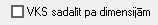

Kontu plāns¶
Sarakstā tiek saglabāti grāmatvediskie konti, kas tiek izmantoti dokumentu grāmatošanai , grāmatojumu šablonos un Virsgrāmatas atskaišu sagatavošanai. Kontu plānu var izveidot neierobežoti plašu un hierarhisku. Hierarhiskais kontu plāns nodrošina datu grupēšanu uz augstākajiem kontu līmeņiem.
Jauna konta pievienošana¶
Lai kontu plānā pievienotu jaunu kontu , jāizmanto komanda
 no rīku joslas (Alt+P) un tiks atvērts jauns
logs:
no rīku joslas (Alt+P) un tiks atvērts jauns
logs:

Augstākais konts: kontam, kuru jāpievieno kā subkontu (zemāka līmeņa kontu), jānorāda augstāk esošais konts. Ja augstāka līmeņa konts nav, tad kā augstāko kontu norāda [Nav]:

Konts: jānorāda konts;
Nosaukums: jānorāda konta nosaukums;
Statuss: jānorāda vai kontam ir atļauta, aizliegta datu ievade, vai arī ieraksts ir slēgts:
{kind=link}
Aizliegt datu ievadi -kontu nevarēs izmantot grāmatojumos, bet varēs izmantot veidojot atskaites. Šo konta statusu vēlams izmantot augstākajiem kontu līmeņiem hierarhiskajā kontu plānā. Atļaut datu ievadi - šo statusu izmantot pievienojot jaunu kontu, kuru varēs izmantot grāmatojot dokumentus.
 Abu augstāk minēto statusu maiņa esošajiem
kontiem, neietekmē vēsturiski grāmatotos dokumentus un atskaites.
Abu augstāk minēto statusu maiņa esošajiem
kontiem, neietekmē vēsturiski grāmatotos dokumentus un atskaites.
Ieraksts ir slēgts - kontu nevarēs izmantot grāmatojumos un veidojot atskaites.
Konta atlikums: konta atlikuma un grāmatojuma puses (debetā, kredītā vai abos):

Dimensiju lietošana grāmatojumos:
{kind=link}
Lietot obligāti: dimensija tiks lietota grāmatojumā. Grāmatojumu nebūs iespējams saglabāt, ja netiks norādīta attiecīgā dimensija;
Lietot pēc izvēles: grāmatojot iespējams izvēlēties, lietot vai nelietot;
Nelietot: grāmatojumos netiks lietotā attiecīgā dimensija.
- tiek lietots, lai attiecīgajam kontam tiktu rēķinātas valūtu kursu svārstības :
{kind=link}
 - tiek lietots, ja nepieciešams valūtu kursu svārstību sadalījums pa dimensijām
{kind=link}
Lai konts tiktu pievienots un saglabāts kontu plānā, jānospiež poga
 .
.
Lai veiktu izmaiņas pievienotajos kontos, ieraksts ir jāatver, rīku
joslā nospiežot pogu  un jāveic izmaiņas. Lai
saglabātu veiktās izmaiņas ir jānospiež poga
un jāveic izmaiņas. Lai
saglabātu veiktās izmaiņas ir jānospiež poga  .
.